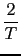
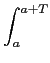
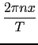

fourier_bn a quatre ou cinq paramètres : une expression
ex dependant d'une variable, le nom de la variable (par exemple x), la
période T, un entier n et a (a vaut 0 par défaut).
fourier_bn(ex,x,T,n,a) renvoie le coefficient de Fourier bn d'une
fonction de variable x définie sur [a, a + T[ par f (x) = ex et périodique
de période T.
Si f est continue par morceaux fourier_bn(ex,x,T,n,a) renvoie :
bn = f (x)sin()dx
Si l'on veut que les calculs soient simplifiés il faut dire que n est un entier en tapant assume(n,integer).
Examples
Soit la fonction f, de période T = 2, définie sur [- 1;1[ par
f (x) = x2.
On tape, pour avoir son coefficient bn (n 0) :
assume(n,integer);fourier_bn(x^2,x,2,n,-1)
On obtient :
0
Soit la fonction f, de période T = 2, définie sur [- 1;1[ par
f (x) = x3.
On tape, pour avoir son coefficient b1 :